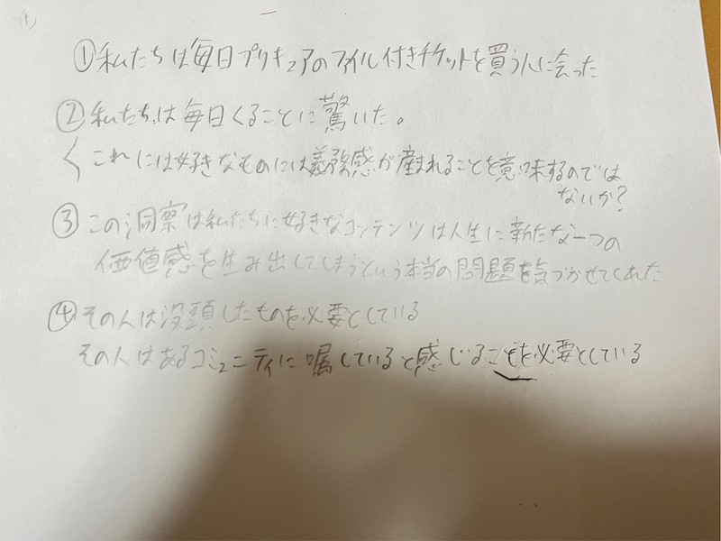
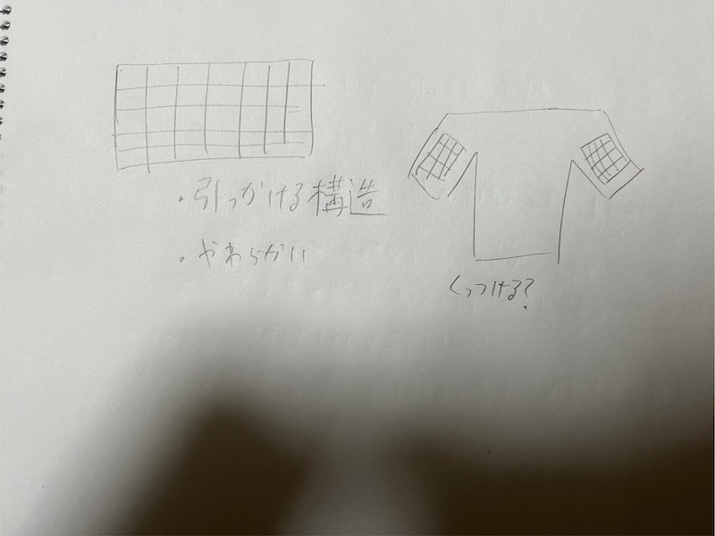
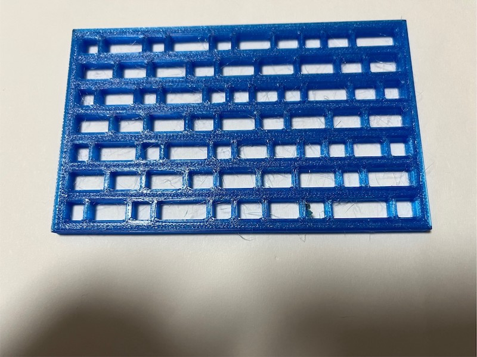

伸縮素材の可能性/Design for others
今回着目した問題

自分達の班はオタクに着目して制作に取り組むことにしました。オタクは持ち物が多いイメージなので
どこかにひっかっけて持ち運べたら楽なのではと思いつき、服にアミアミを付け加えようと考えつきました
構想時のスケッチ

素材は柔くて弾力性のあるTPUにすることで身に付けてる時に違和感を感じないように配慮しました
完成した作品

好きな場所に物を引っ掛けられるようにできるだけたくさんの穴を作った
全て同じ大きさの穴にすると対応できないものが出てくるので何種類かの大きさを設けた
班の他のメンバー